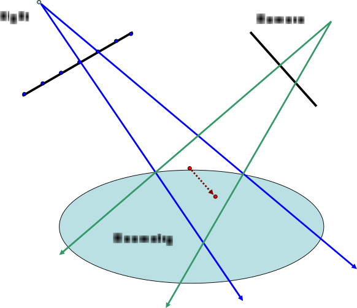
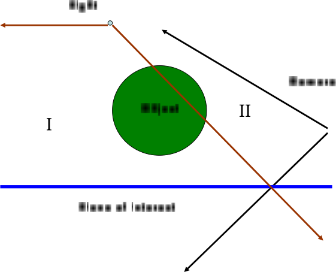

|
OGRE 14.5
Object-Oriented Graphics Rendering Engine
|
|
OGRE 14.5
Object-Oriented Graphics Rendering Engine
|
Shadow mapping, an algorithm introduced by Lance Williams [16] and now prevalent in real-time and off-line rendering, is based on a simple idea: First, a snapshot of the scene is taken from the viewpoint of the light. Then, when creating an image from the perspective of the camera, the light’s snapshot is used to determine visibility. Parts of the scene seen by both the light and the camera must be lit (by the light in question). Parts of the scene visible only to the camera must be shadowed. We do not care about parts of the scene seen only by the light.
In practice, the snapshot from the viewpoint of the light is stored as a floating point depth buffer. It is important to use a format that supports enough precision to avoid shadow acne (z-fighting) on lit surfaces. In Ogre, we can specify the depth format to use; in the example code, we will choose the 16-bit format.
Once shadow determination has occurred (whether a fragment is in shadow or not), Ogre provides two different ways to render the shadows into the final image. The modulative technique will uniformly darken regions of the image determined to be in shadow. This is a cheaper and less accurate lighting model. For instance, specular highlights in shadow will appear as darkened specular highlights. The other technique is additive light masking. This technique builds up contributions from each light in non-shadowed areas and adds them together to create the final image. The code in section Implementation will use additive light masking, but could just as easily be adapted for modulative shadows.
Mathematically, the process can be represented as follows: Let \(P_l\) and \(P_c\) be the projection matrices for the light and camera respectively. Let \(M_l\) and \(M_c\) be the modelview matrices for the light and camera coordinate systems. Let \(\vec{x} = [x_1,x_2,x_3,1]^t\) be a point in object space, \(\vec{y} = [y_1,y_2,y_3,1]^t\) the screen space coordinates, and \(\vec{u} = [u_1,u_2,u_3,1]^t\) the shadow map coordinates.
\[ \begin{aligned} \left[ \begin{array}{c} u_1 w_l \\ u_2 w_l \\ u_3 w_l \\ w_l \end{array} \right] = P_l M_l \left[ \begin{array}{c} x_1 \\ x_2 \\ x_3 \\ 1 \end{array} \right]\end{aligned} \]
\[\begin{aligned} \left[ \begin{array}{c} y_1 w_c \\ y_2 w_c \\ y_3 w_c \\ w_c \end{array} \right] = P_c M_c \left[ \begin{array}{c} x_1 \\ x_2 \\ x_3 \\ 1 \end{array} \right]\end{aligned}\]
These equations can be written more concisely as: \(\vec{u}w_l = P_l M_l \vec{x}\) and \(\vec{y} w_c = P_c M_c \vec{x}\). Division of \(\vec{u}w_l\) and \(\vec{y}w_c\) by their respective homogeneous coordinates yields the Euclidean representations \(\vec{u}\) and \(\vec{y}\).
Note that while \(P_c\) and \(M_c\) are completely determined by the camera image we want to produce, we have some ambiguity in the \(P_l\) and \(M_l\) chosen for shadow mapping. The degrees of freedom here are later exploited to combat the aliasing issue.
 Shadow map sample must use one float to represent a range of possible depth values. A depth sample is chosen in the middle. Any camera image point in between the two camera rays will see the geometry, and depending on distance from light will report differently on shadowed versus lit. However, every such point should be lit.
Due to the finite precision of floating point representations and inherent inability of one number to represent a range of values, it is often necessary to add a little bias to the depth values stored in a shadow map. One does not simply store the \(u_3\) value. Figure [fig:bias] illustrates the issue. Here we have used blue dots on the light’s image plane to represent boundaries between shadow “texels.” The interval in between the dots then represents a shadow map sample for which a single depth value (float) is stored. For the sample whose boundary rays are shown, the red dot’s depth is saved. However, note that from the camera’s perspective, any (camera) image point in between the two drawn camera rays will hit the scene geometry within the shadow map sample’s interval. Hence, the same shadow map sample depth will be used to determine visibility for all such camera pixels. Camera pixels whose rays fall to the right of the red dot will be marked as shadowed, while pixels whose rays fall to the left of the red dot will be marked as lit. This is not the right behavior because clearly all the pixels should be marked as lit. As we can see, a depth bias is needed. By pushing the shadow map sample’s depth farther (to the 2nd red dot), we can achieve correct shadow determination.
One could approach the depth bias issue in a completely ad hoc manner, but it is possible to do better. One would ideally compute a bias that depends on how depth ( \(u_3\)) changes between shadow map samples. The change in depth as one moves a unit step (to the next shadow map sample) represents the ambiguity of the depth value. Such a value may seem intractable to compute, but calculus and linear algebra save the day. From calculus, we learn that the derivative provides the best linear approximation to any function ( \(u_3 = u_3(u_1, u_2)\) in particular). In multiple dimensions, this role is played by the Jacobian (matrix of partial derivatives). In other words, we want to compute \(\frac{du_3}{du_1}\) and \(\frac{du_3}{du_2}\), where we have treated \(u_3\) as a function of \(u_1\) and \(u_2\). Once these values are computed, it makes sense to then add some weighted combination of these to the stored depth value (e.g., some scale of the Jacobian’s Frobenius norm).
But even if the light is staring at a plane straight on (view direction lines up with plane’s normal), making \(\frac{du_3}{du_1}\) and \(\frac{du_3}{du_2}\) both zero, we would still need a slight offset because rounding due to the float’s finite representation may still cause shadow acne. In this case, we’d like to offset the depth by a small value that pushes it beyond rounding ambiguity. While one could use an arbitrary constant offset, this is unsatisfactory since the constant in light image space corresponds to varying amounts of offset in light space (pre-projection Euclidean space with light’s position at origin). Let us instead choose a constant offset in the z direction of light space and compute what the offset for a particular sample should be in light image space. In Ogre’s example code, the small constant offset in light space is chosen to be 1 unit. If 1 is not a small amount in your engine’s chosen scale, you can easily change this choice. At any rate, the relevant quantity is \(\frac{\partial u_3}{\partial X_3}\) where \(\vec{X} = M_l \vec{x}\).
The choices here closely mirror what OpenGL implements through glPolygonOffset. The second adjustment is slightly different since OpenGL chooses a vendor specific fudge factor.
Equations for computing the stated quantities are provided below. One need not wade through these to use the depth biasing code. Understanding what the relevant parameters explained above are (in case adjustment is needed) is sufficient.
\[\begin{aligned} \label{eqn:dxqdu} \frac{\partial (\vec{x} q_l)}{\partial u_i} = \mbox{i-th column of } M_l^{-1} P_l^{-1} V_l^{-1} \end{aligned}\]
where \(V_l\) is the viewport matrix for the light and \(i=1,2,3\). \(q_l\) turns out to be \(1/w_l\).
\[\begin{aligned} \label{eqn:dxdu} \frac{\partial \vec{x}}{\partial u_i} = \frac{1}{q_l} \left( \frac{\partial (\vec{x} q_l)}{\partial u_i} - \vec{x}\frac{\partial q_l}{\partial u_i} \right) \\ \label{eqn:du3du} \frac{du_3}{du_j} = \left( \vec{n} \cdot \frac{\partial \vec{x}}{\partial u_3} \right)^{-1} \left( \vec{n} \cdot \frac{\partial \vec{x}}{\partial u_j} \right)\end{aligned}\]
where \(\vec{n}\) is the normal at point \(\vec{x}\) and \(j=1,2\). Note that ([eqn:du3du]) is exactly the set of values needed for the first part.
\[\begin{aligned} \label{eqn:duwdX3} \frac{\partial (\vec{u} w_l)}{\partial X_3} = \mbox{3rd column of } P_l \\ \label{eqn:dudX3} \frac{\partial \vec{u}}{\partial X_3} = \frac{1}{w_l} \left( \frac{\partial (\vec{u} w_l)}{\partial X_3} - \vec{u}\frac{\partial w_l}{\partial X_3} \right)\end{aligned}\]
Note that ([eqn:dudX3]) is the quantity needed for the second bias term. This is also the term to scale for different choices of small offset in light space. If 0.01 units is the small offset, scale this value by 0.01.
As widely known, shadow mapping can exhibit significant aliasing. When this happens during texture mapping we apply filtering. We’d like to apply a similar principle with shadow maps, but filtering depth values is categorically the wrong thing to do. As described in [13], one should instead filter depth test results. This is termed percentage closest filtering. Ideally this would be a filtering technique much like anisotropic texture filtering, but for simplicity and efficiency, Ogre’s example code implements the bilinear analogue.
There are many shadow mapping variants. Enumerating (much less describing) all of them would take us too far afield in this article. We instead defer to the provided references and google for such coverage. The many variants can, however, be broken up into three broad categories:
Algorithms in each category usually work quite independently and so many hybrid approaches are easily conceivable.
One example of this is Deep Shadow Maps [8]. In this work, instead of storing a single depth value and treating visibility as a binary value, a transfer function is stored and visibility is continuous. This algorithm is important in offline movie rendering, but also relevant to the Variance Shadow Mapping algorithm elucidated by the game developer community [5].
While variance shadow maps are motivated by statistical considerations, it is perhaps more properly understood in the Deep Shadow Maps framework. Analyzing it in terms of distributions is flawed for two reasons:
Recasting this into the framework of deep shadow maps, we see that the proposed equality is simply a particular functional approximation to the transfer function. Variance shadow maps proposes a two-parameter family of approximation functions whose parameters are linearly interpolated in the usual way. This viewpoint allows for analysis and also suggests the possibility of getting improvements via other approximating functional forms.
Adaptive Shadow Maps [6] are an example of this. It is still largely considered too expensive for real-time rendering, but continued research and growing GPU power may make some variant worthwhile.
There are various heuristic approaches for choosing \(P_l\) and \(M_l\), but here we will focus on one method, the Plane Optimal algorithm [2], that provides a particular guarantee. For this algorithm, we specify a plane of interest (e.g., ground plane, wall, table top) for which we want perfect shadowing no matter the configuration of light and camera in the scene (even dueling frusta). The algorithm will then compute \(P_l\) and \(M_l\) so that the mapping between camera image and light image is the identity when restricted to the plane. If the shadow map matches the resolution of the screen, then each pixel gets exactly one shadow sample. Shadows off the plane of interest have no guarantees. One limitation of the method is shown in Figure [fig:planeopt]. Only region I will be shadowed and self-shadowed properly, with points on the plane being shadowed perfectly (alias-free). This makes the method perhaps most useful for games where the view is top-down or isometric (like RTS games). It is also useful for cases like dueling frusta (where just about all other methods fail).
 Region I is defined as the set of all points along rays between the light and a point on the plane of interest in the camera’s view. Everything in region I is shadowed and self-shadowed properly. Objects in region II are not self-shadowed properly.
A full discussion of shadow map analysis is beyond the scope of this article. For those interested, the references [3] and [2] are good (in my extremely biased opinion). Note that as research papers, they are quite concise. Unfortunately there don’t seem to more step-by-step expositions available at this moment.
There has been a lot of academic and industry research on improving shadow maps. However, analyses presented on shadow maps often do not say what people claim they say. These faulty conclusions usually come from considering very special cases and assuming the general case is very similar. For clarification, we explore some of these misconceptions here.
We start with one heuristic that has gained quite a bit of traction: the idea of using some logarithmic mapping between light space and light image space instead of a projective transform. A number of algorithms based on this idea have been proposed, and even some hardware changes. Much of this work seems to be motivated by the incorrect assumption that logarithmic mappings are optimal.
The very special motivating case is this: The camera looks down the z axis. Directional light illuminates the scene perpendicular to the z axis. An angled piece of a plane is viewed by the camera. As the angled piece of plane is pulled along the camera ray direction, using a logarithmic shadow map gives us constant shadow quality on this geometric piece. But unless we’re rendering translucent dust particles along a camera ray, this analysis is irrelevant. If the dust particles are not translucent, we only care about shadow determination on the first one, not a whole line of them. If we are rendering continuous surfaces (resp. curves), we care about the quality as one moves in the tangent plane (resp. tangent) direction because this is the best linear approximation to the surface (resp. curve), not the camera ray direction.
In fact, in the case of a chosen plane of interest for example, we know we can get completely alias free shadow mapping using a projective transform (section Playing with Projection Matrices). Logarithmic shadow maps may be an interesting heuristic to try out, but certainly not worth changing hardware over in my opinion. If you’re going to change hardware, might as well aim for true optimality.
Sometimes people tend to conflate these two sources of aliasing. They note that after applying some sort of custom projective transform, the depth values are warped as well. This problem can be completely overcome via the depth replacement method prescribed in Trapezoidal Shadow Maps [9]. So this is a completely orthogonal issue. Depth precision can be just as good as “normal” shadow maps, no matter the perspective warp used to affect sampling.
The terms perspective and projective aliasing appeared in the Perspective Shadow Maps [14] paper and has since been used extensively by those who work on improving shadow heuristics. Often it is claimed that methods ameliorate perspective aliasing while projective aliasing is either unavoidable or must be addressed via completely separate means. However, the distinction between the two is somewhat artificial. Both result from not allocating enough shadow map samples to regions that matter to the viewer. As the Plane Optimal algorithm demonstrates, it is possible to completely remove projective aliasing (as well as perspective aliasing) in certain scenes. In general, there should be one combined measure of aliasing and algorithms must minimize this quantity. See [3] for a unified notion of aliasing.
Ogre provides a powerful framework that allows us to do a lot of shadow map customization. In Ogre, we turn on custom shadow mapping through the scene manager. It is recommended that this happen early as it may affect how certain resources are loaded.
The setShadowTechnique call is all that is required for Ogre’s default shadow mapping. In the code above, we have told Ogre to use a 16-bit depth texture. This tends to be a very portable method (over graphics cards and APIs). The sample uses 1024x1024 shadow maps. Self-shadowing is turned on, but be warned that this will only work properly if appropriate depth biasing is also used. The example code will manually account for depth biasing via the method described above in section Depth Biasing. The shadow caster and shadow receiver materials are defined in a material script. They tell Ogre which shaders to use when rendering shadow casters into the shadow map and rendering shadow receivers during shadow determination.
We’ll present the GLSL code below. Note that the variable names in the shaders presented below are slightly different from those presented earlier in this document. This is due in part to the awkwardness of expressing subscripts in variable names and also in part because \(u_3\) is less evocative of depth than \(z\), etc. With minimal effort one can match the shader equations with those presented earlier. The code is presented here mostly to demonstrate how things fit together.
This is a pretty standard vertex shader.
Just write out the depth values here. The bias and derivatives are handled by the depth_bias set in the pass.
This is a pretty standard vertex shader as well.
Additionally this file implements percentage closest filtering. To use unfiltered shadow mapping, comment out the PCF define.
Since shadows are a difficult subject, so it is a good idea to have the Shadow Map projected on a Mini-Screen where it is possible to see how the Depth Caster is performing.
Material definition: shadow_debug.material
With only this material definition the RTSS (Realtime Shader System) takes care of generating the proper shader to project the Shadow Map on the Mini Screen.
Source code to create a Rectangle on the screen and project the Shadow Map texture:
The default projection used when rendering shadow textures is a uniform frustum. This is pretty straight forward but doesn't make the best use of the space in the shadow map since texels closer to the camera will be larger, resulting in 'jaggies'. There are several ways to distribute the texels in the shadow texture differently. Ogre is provided with several alternative shadow camera setups:
These Shadow Camera Setups can be enabled for the whole Scene with Ogre::SceneManager::setShadowCameraSetup or per light with Ogre::Light::setCustomShadowCameraSetup
The following shows how to activate Plane Optimal Shadow Mapping given some pointer to a MovablePlane and a pointer to a light.
Another example, using LiSPSM Camera Setup:
For big scenes with directional lights one of the better performing Shadow Camera Setups is PSSM. A PSSM shadow system uses multiple shadow maps per light and maps each texture into a region of space, progressing away from the camera. As such it is most appropriate for directional light setups. A more in depth explanation can be found in the wiki: Parallel Split Shadow Mapping
The Shadow Caster Vertex and Fragment programs are the same as the regular shadow mapping techniques.
But some changes have to be made to the shaders of the Shadow Receiver as well as the program definition, because now we are sending three shadow map splits (in this example).
Material definition:
Program definition:
The vertex shader now includes three texture projection matrixes
And the fragment shader has to be accommodated to select the correct Shadow Map according to the camera distance